Lab1: コード提案生成機能
このページでは、Lab1を完了するための手順を順を追って説明しております。
Lab1 の範囲:
- チャットでの会話でのコード入力による、コードの提案の生成
注意点
- 生成 AI の特性上、コード提案生成にはバリエーションが含まれる場合があり、これは、生成される提案コードは毎回完全に同一ではない可能性があることを指しております。
- チャットは会話の履歴をコンテキストとして受け取ります。そのため、メリットとしては、フォローアップの質問ができるという点が挙げられます。しかし、プロンプトの出力にも影響を与える可能性があります。そのため、出力が望ましくない場合は、チャットセッションを新規に作成してください。以下のボタンを使用します:
ヒント
- 新しいチャットセッションを開始すると、明確な文脈が得られ、より良い結果につながります。
- 使用していないチャットセッションを削除することで整理できます。
- 簡単な指示でコード提案は生成されるため、シンプルな指示であることが望ましいです。
1. シンプルな指示
任意のプロジェクトに対して空のJavaファイルを作成します。(名前はBubbleSort.javaなど任意)
wCAを使ってJavaのコードを生成します。チャット画面を開いて以下の内容を入力し、送信します。
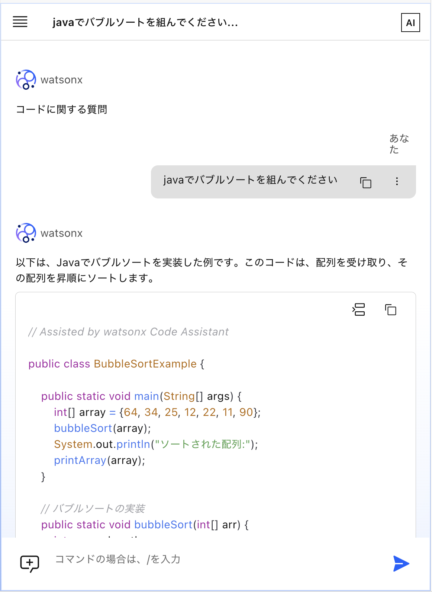
コードの提案例は以下の通りです。
// Assisted by watsonx Code Assistant
public class BubbleSortExample {
public static void main(String[] args) {
int[] array = {64, 34, 25, 12, 22, 11, 90};
bubbleSort(array);
System.out.println("ソートされた配列:");
printArray(array);
}
// バブルソートの実装
public static void bubbleSort(int[] arr) {
int n = arr.length;
for (int i = 0; i < n - 1; i++) {
for (int j = 0; j < n - i - 1; j++) {
if (arr[j] > arr[j + 1]) {
// 隣接要素を交換
int temp = arr[j];
arr[j] = arr[j + 1];
arr[j + 1] = temp;
}
}
}
}
// 配列をprintするメソッド
public static void printArray(int[] arr) {
for (int value : arr) {
System.out.print(value + " ");
}
System.out.println();
}
}
生成したコードをエディターに反映するためには、コード挿入アイコンをクリックします。（以下の図を参考）
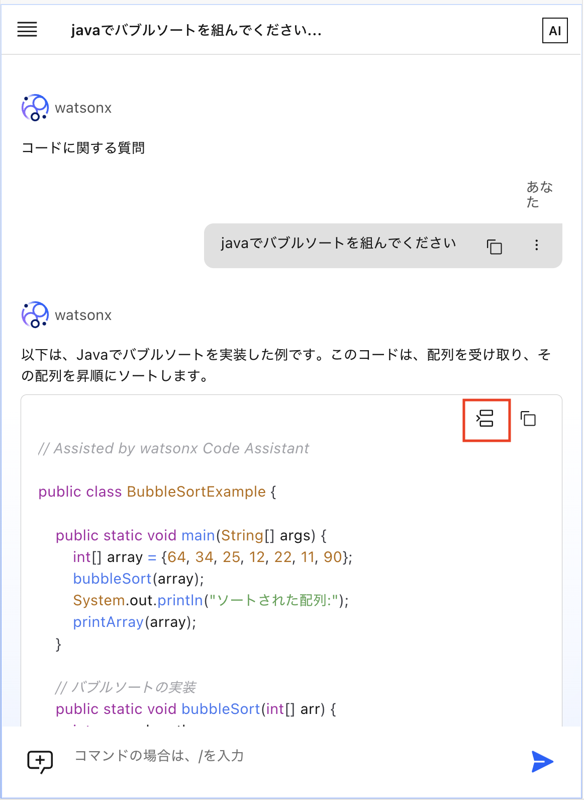
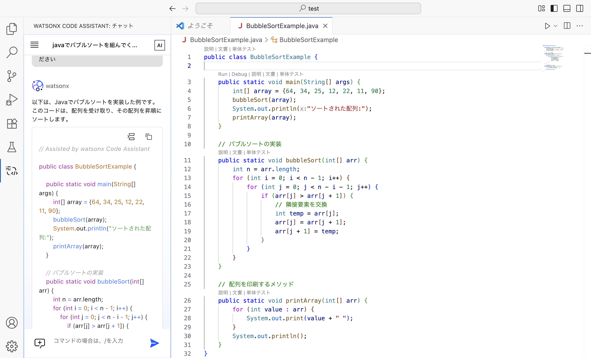
こちらのコードを実行してみます。ターミナルを開きます。（ターミナル→新しいターミナル）
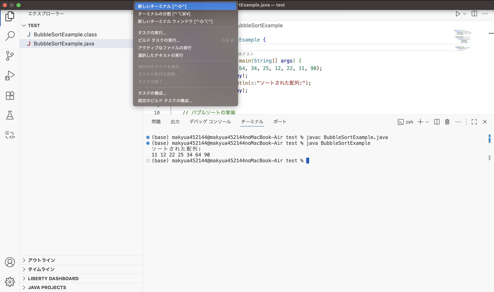
まずは以下のコマンドを入力し、実行します。
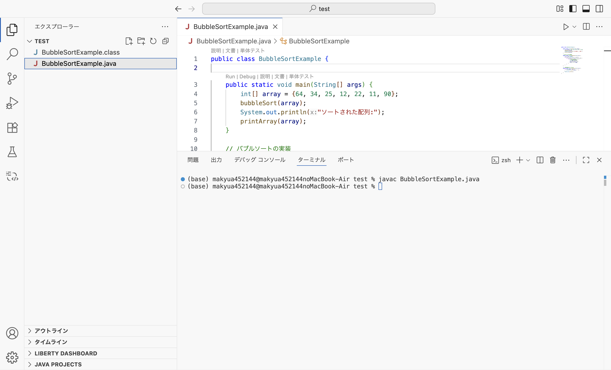
続いて、以下のコマンドで実行し、期待通りの結果が得られていることを確認します。
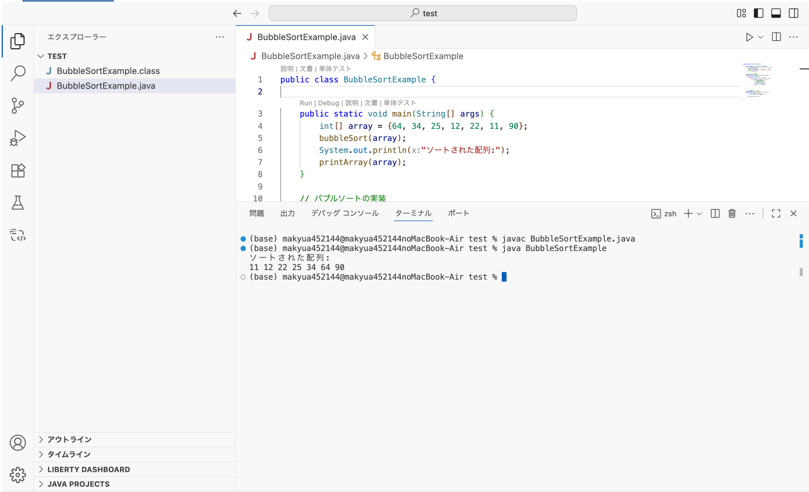
2. コードのレビュー
より期待するコードを得るために、フォローアップの指示としてコードのレビューを指示します。
レビューするjavaファイル"Sample.java"を別途作成します。
import java.util.*;
public class Sample {
public static void main(String[] args) {
try (Scanner in = new Scanner(System.in)) {
int n = in.nextInt();
int[] a = new int[n];
for(int a_i=0; a_i < n; a_i++){
a[a_i] = in.nextInt();
}
}
}
public void sum(int[] a) {
int sum = 0;
for (int i = 0; i < a.length; i++) {
sum += a[i];
}
System.out.println(sum);
}
public void print(int[] a) {
for (int i = 0; i < a.length; i++) {
System.out.println(a[i]);
}
}
public void sort(int[] a) {
Arrays.sort(a);
double median;
if (a.length % 2 == 0) {
median = (a[a.length / 2 - 1] + a[a.length / 2]) / 2.0;
} else {
median = a[a.length / 2];
}
}
}
以下のコマンドを入力します。
Note
@シンボルを入力すると、ワークスペースのクラス、ファイル、関数、メソッドのリストが表示されます。
一度に1つのクラス、ファイル、関数、メソッド参照を使用することができます。
コードの提案例は以下の通りです。
Note
チャットは会話の履歴をコンテキストとして受け取ります。そのため、メリットとしては、フォローアップの質問ができるという点が挙げられます。しかし、プロンプトの出力にも影響を与える可能性があります。そのため、出力が望ましくない場合は、チャットセッションを新規に作成してください。
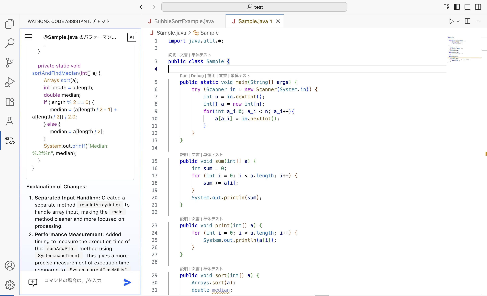
3. コードの修正
より期待するコードを得るために、フォローアップの指示として修正を指示します。
以下のコマンドを入力します。
Note
@シンボルを入力すると、ワークスペースのクラス、ファイル、関数、メソッドのリストが表示されます。
一度に1つのクラス、ファイル、関数、メソッド参照を使用することができます。
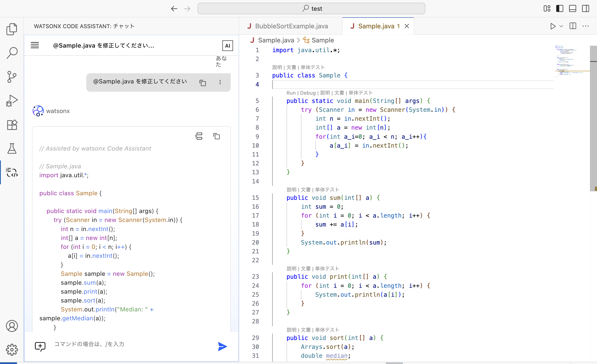
コードの提案例は以下の通りです。
// Assisted by watsonx Code Assistant
// Sample.java
import java.util.*;
public class Sample {
public static void main(String[] args) {
try (Scanner in = new Scanner(System.in)) {
int n = in.nextInt();
int[] a = new int[n];
for (int i = 0; i < n; i++) {
a[i] = in.nextInt();
}
Sample sample = new Sample();
sample.sum(a);
sample.print(a);
sample.sort(a);
System.out.println("Median: " + sample.getMedian(a));
}
}
public void sum(int[] a) {
int sum = 0;
for (int i = 0; i < a.length; i++) {
sum += a[i];
}
System.out.println("Sum: " + sum);
}
public void print(int[] a) {
for (int i = 0; i < a.length; i++) {
System.out.println(a[i]);
}
}
public void sort(int[] a) {
Arrays.sort(a);
}
public double getMedian(int[] a) {
int length = a.length;
if (length % 2 == 0) {
return (a[length / 2 - 1] + a[length / 2]) / 2.0;
} else {
return a[length / 2];
}
}
}
生成したコードをエディターに反映するためには、元のコードを削除し、コード挿入アイコンをクリックします。（以下の図を参考）
Note
期待したコードが得られなかった場合は、上記の出力例を元のコードに貼り付けください
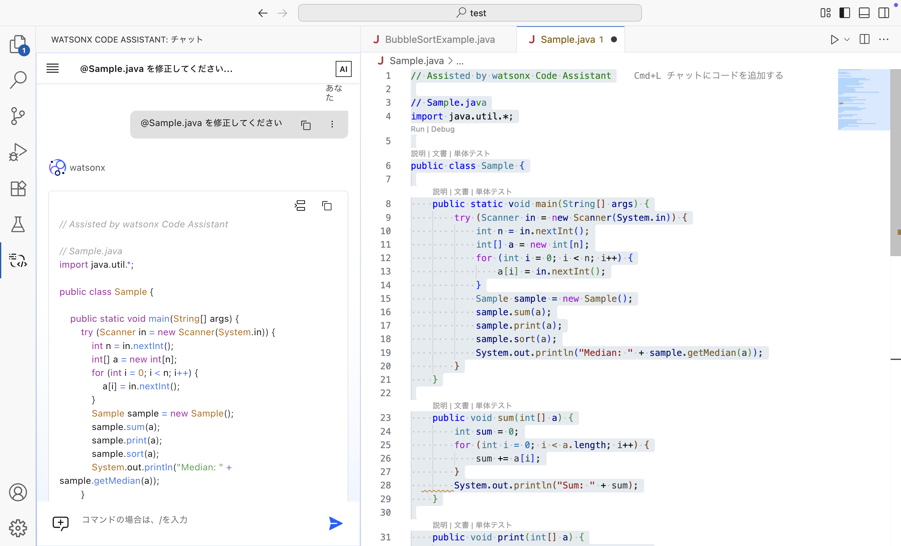
4. シーケンス図の生成
チャットを使って、ソースコードからシーケンス図を生成してみます。
以下のプロンプトを入力します。
Note
@シンボルを入力すると、ワークスペースのクラス、ファイル、関数、メソッドのリストが表示されます。
一度に1つのクラス、ファイル、関数、メソッド参照を使用することができます。
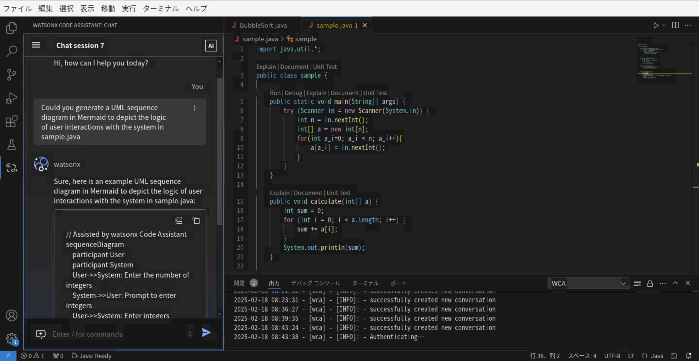
送信すると、ソースコードに対するシーケンス図がMermaid記法で得られます
// Assisted by watsonx Code Assistant
sequenceDiagram
participant In as Input
participant S as Sample
participant Sc as Scanner
participant A as Array
S->>Sc: Instantiate Scanner
Sc-->>S: Read integer n
S->>A: Instantiate Array of size n
loop Read integers
A-->>S: Push each integer
end
S->S: Call sum()
S->S: Call print()
S->S: Call sort()
S->S: Call getMedian()
S-->>console: Print Median
sequenceDiagram
participant In as Input
participant S as Sample
participant Sc as Scanner
participant A as Array
S->>Sc: Instantiate Scanner
Sc-->>S: Read integer n
S->>A: Instantiate Array of size n
loop Read integers
A-->>S: Push each integer
end
S->S: Call sum()
S->S: Call print()
S->S: Call sort()
S->S: Call getMedian()
S-->>console: Print Median5. クラス図の生成
チャットを使って、ソースコードからクラス図を生成してみます。
以下のプロンプトを入力します。
Note
@シンボルを入力すると、ワークスペースのクラス、ファイル、関数、メソッドのリストが表示されます。
一度に1つのクラス、ファイル、関数、メソッド参照を使用することができます。
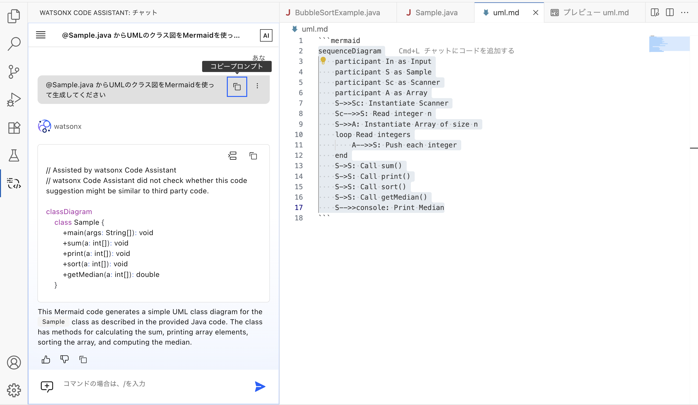
送信すると、ソースコードに対するクラス図がMermaid記法で得られます
// Assisted by watsonx Code Assistant
// watsonx Code Assistant did not check whether this code suggestion might be similar to third party code.
classDiagram
class Sample {
+main(args: String[]): void
+sum(a: int[]): void
+print(a: int[]): void
+sort(a: int[]): void
+getMedian(a: int[]): double
}
classDiagram
class Sample {
+main(args: String[]): void
+sum(a: int[]): void
+print(a: int[]): void
+sort(a: int[]): void
+getMedian(a: int[]): double
}6. Java Interfaceの生成
チャットを使って、Java Interfaceを生成してみます。
以下のプロンプトを入力します。
Note
@シンボルを入力すると、ワークスペースのクラス、ファイル、関数、メソッドのリストが表示されます。
一度に1つのクラス、ファイル、関数、メソッド参照を使用することができます。
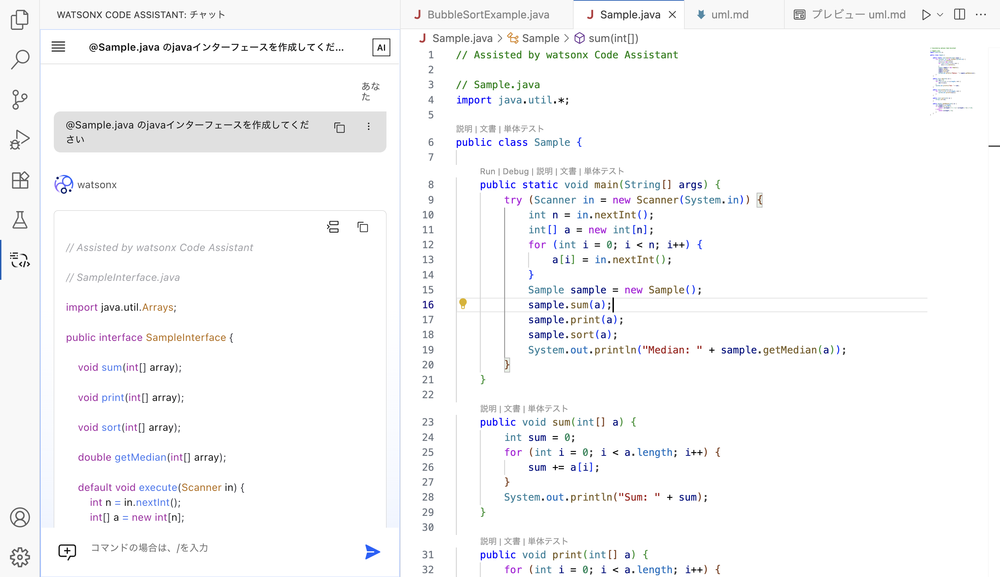
送信すると、ソースコードに対する Java Interface が生成されます。
7. スクリプトの生成
チャットを使って、ソースコードをデプロイするためのスクリプトを生成してみます。
以下のプロンプトを入力します。
Note
@シンボルを入力すると、ワークスペースのクラス、ファイル、関数、メソッドのリストが表示されます。
一度に1つのクラス、ファイル、関数、メソッド参照を使用することができます。
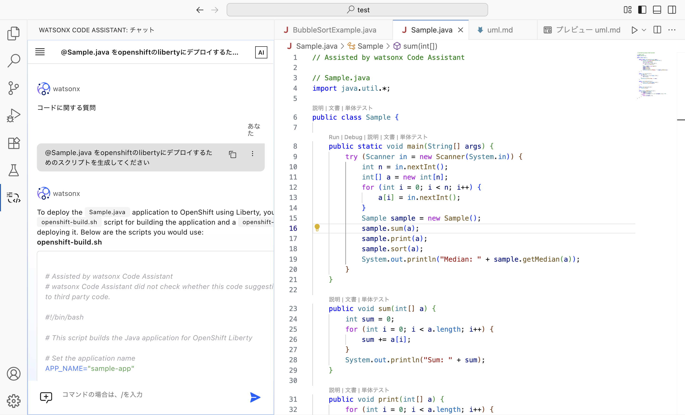
送信すると、スクリプトが生成されます。
# Assisted by watsonx Code Assistant
# watsonx Code Assistant did not check whether this code suggestion might be similar to third party code.
#!/bin/bash
# This script deploys the Java application to OpenShift Liberty
# Set OpenShift variables
PROJECT="your-openshift-project"
SERVER="your-liberty-server"
# Set application variables
APP_NAME="sample-app"
WAR_FILE="target/$APP_NAME.war"
# Login to OpenShift
oc login -u developer -p developer
# Create a new Liberty buildconfig if it doesn't exist
oc new-build --name=$APP_NAME --strategy-type=Docker --strategy-params='kind=ImageStreamTag,type=Java,outputDirectory=target,imageStream=sample-app:latest' --context-dir=.
# Deploy the application
oc new-app $APP_NAME=https://raw.githubusercontent.com/openshift/origin/master/examples/java-ex/springboot-sample/openshift/springboot-sample.json
# Expose the service
oc expose svc/$APP_NAME
# Wait for the deployment to complete
oc rollout status dc/$APP_NAME
# Print the URL to access the application
echo "Application deployed. Access it at: http://$APP_NAME-$PROJECT.$SERVER"
以上です。